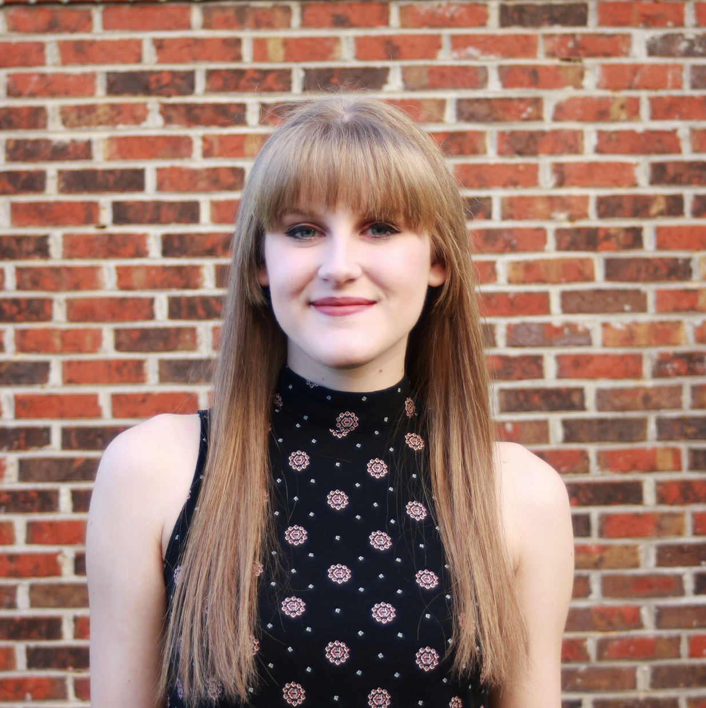

|  |
about the artist
I am a digital artist based out of the US. I received a BA and an MA from Florida State University. I enjoy creative writing, art, graphic design, and photography. All works are created in Adobe Photoshop Elements 11 with a Wacom Intuos graphic tablet.
Artist's Statement:
I am a quasi-surrealist digital fine artist. I create my art completely on a computer. I paint in Adobe Photoshop with the aid of a Wacom Intuos graphic tablet. Through this process, I interweave techniques and concepts from traditional art with the means and tools of digital art. In each piece, I look to create a juxtaposition between the fantastic and the worldly to create an image which seems just out of reach. The tools provided by digital art programs allow me to best do this.
. All images here © s. e. marvin.
|